7 days · 21 meals + snacks · €67.82 total · €9.69 a day
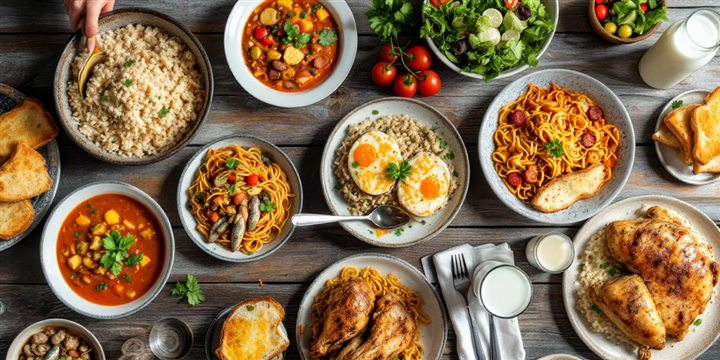
A week of everyday Portuguese eating — soup with almost every dinner, rice or pasta at lunch, bread and cheese at breakfast — built from the cheapest suitable items on the Auchan (Castelo Branco) Glovo catalogue. Breakfast is always a cheesy toast; the tuna is dressed with oil and onion, never tomato.
Meals
21 + snacks
Food
€66.33
Delivery
€1.49
Total
€67.82
Per day
€9.69
Items
36
The week
Day 1Tosta mista — cheese and ham toast · Arroz de frango · Sopa de legumes with a cheese toast
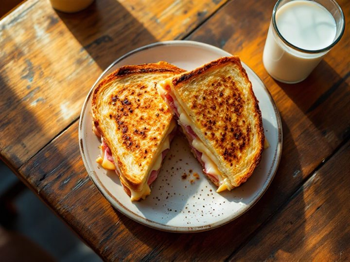
BreakfastTosta mista — cheese and ham toastpão de forma · queijo flamengo · fiambre · leiteLunchArroz de frangoarroz carolino · frango · cebola · alho · cenoura · azeite
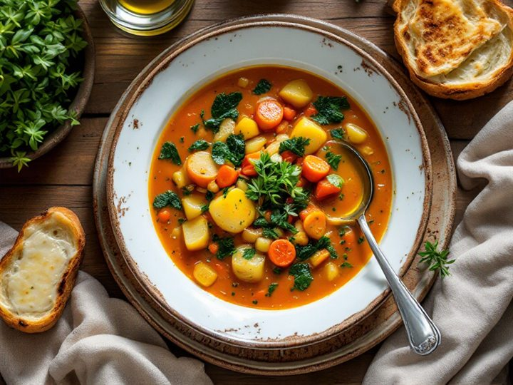
DinnerSopa de legumes with a cheese toastbatata · cenoura · cebola · azeite · pão · queijo
Snack Yogurt and banana
Day 2Tosta de queijo com tomate · Massa com atum e cebola · Sopa de feijão frade with bread
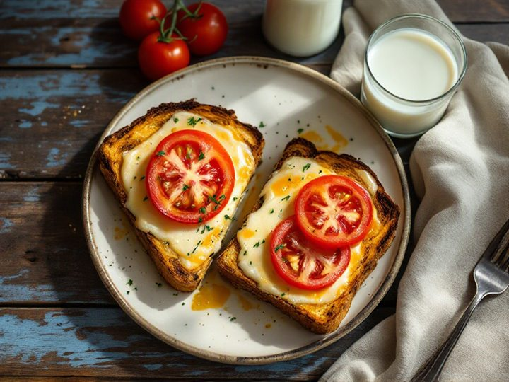
BreakfastTosta de queijo com tomatepão de forma · queijo flamengo · tomate · leite
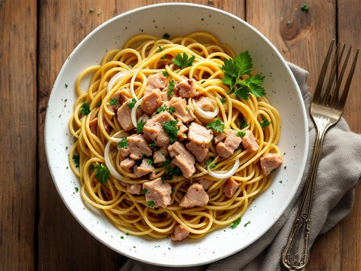
LunchMassa com atum e cebolamassa · atum · cebola · azeite
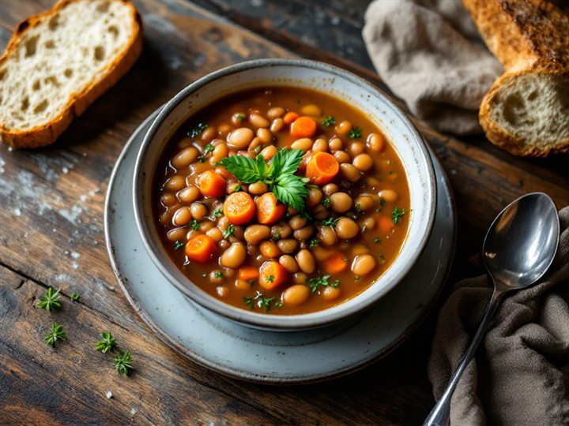
DinnerSopa de feijão frade with breadfeijão frade · cenoura · cebola · batata · pão
Snack Biscuits and banana
Day 3Tosta de queijo com marmelada · Arroz de salsichas com feijão frade · Bacalhau com natas with salad
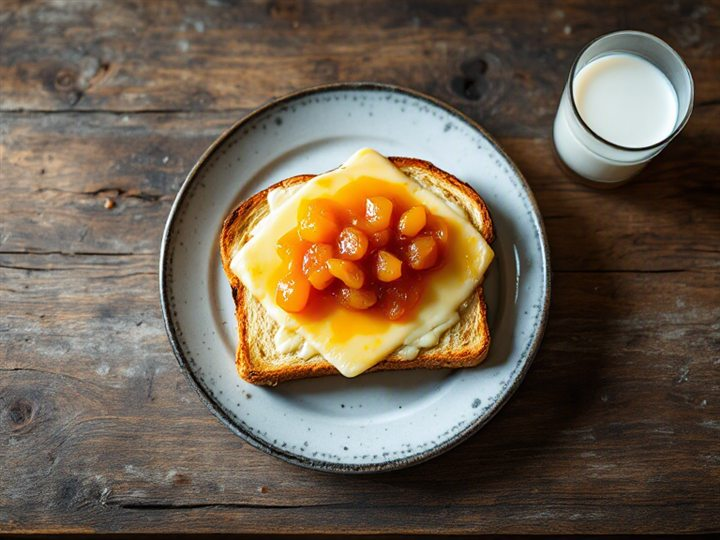
BreakfastTosta de queijo com marmeladapão de forma · queijo flamengo · marmelada · leite
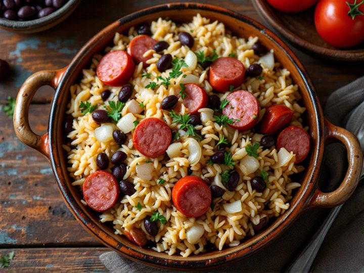
LunchArroz de salsichas com feijão fradearroz · salsichas · feijão frade · cebola
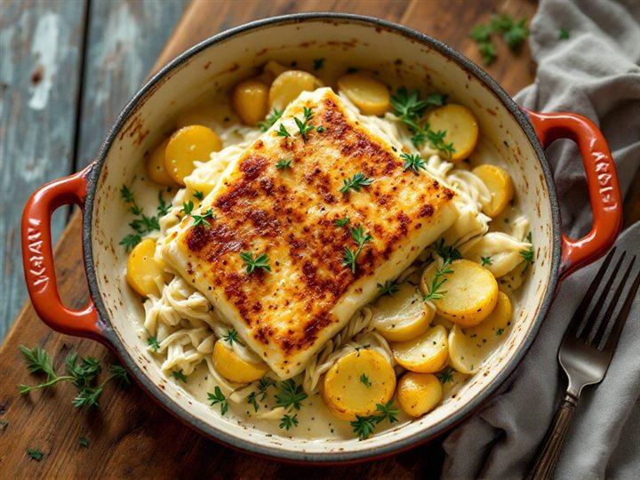
DinnerBacalhau com natas with saladbacalhau com natas · tomate · cebola · azeite
Snack Yogurt and apple
Day 4Tosta mista — cheese and ham toast · One-pot pork and potato stew · Sopa de tomate with a cheese toast
BreakfastTosta mista — cheese and ham toastpão de forma · queijo flamengo · fiambre · leite
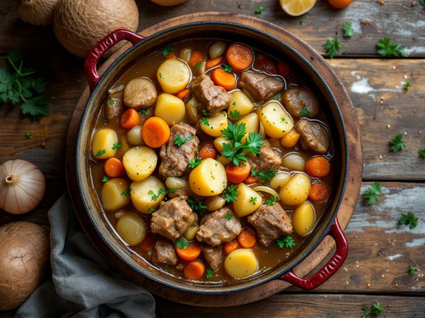
LunchOne-pot pork and potato stewrosários de porco · batata · cenoura · cebola · farinha
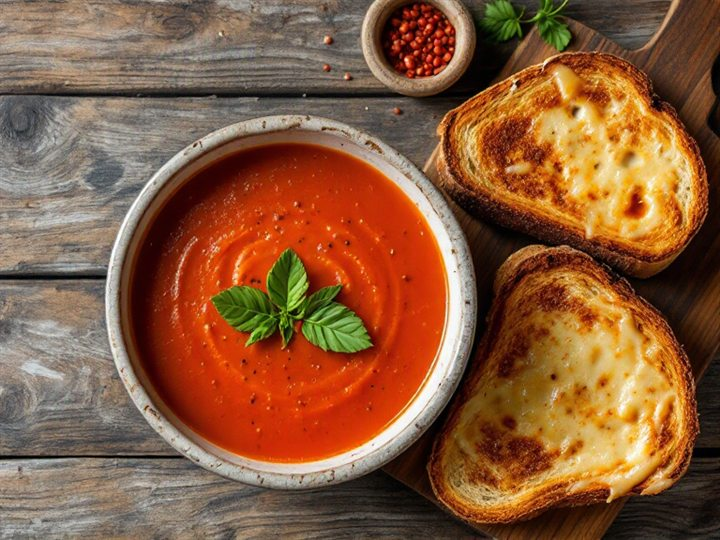
DinnerSopa de tomate with a cheese toasttomate triturado · cebola · batata · natas · pão · queijo
Snack Biscuits and banana
Day 5Tosta de queijo com manteiga, and a coffee · Risotto de legumes com queijo · Creme de legumes with bread
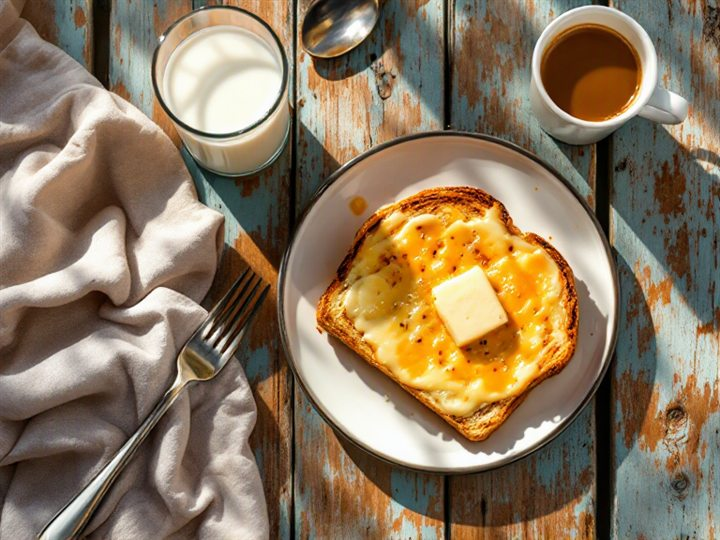
BreakfastTosta de queijo com manteiga, and a coffeepão de forma · queijo flamengo · manteiga · café
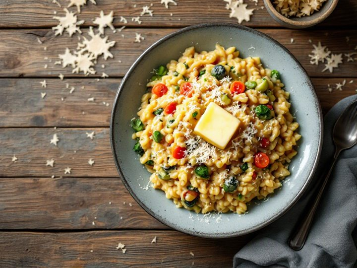
LunchRisotto de legumes com queijoarroz risotto · legumes · natas · queijo
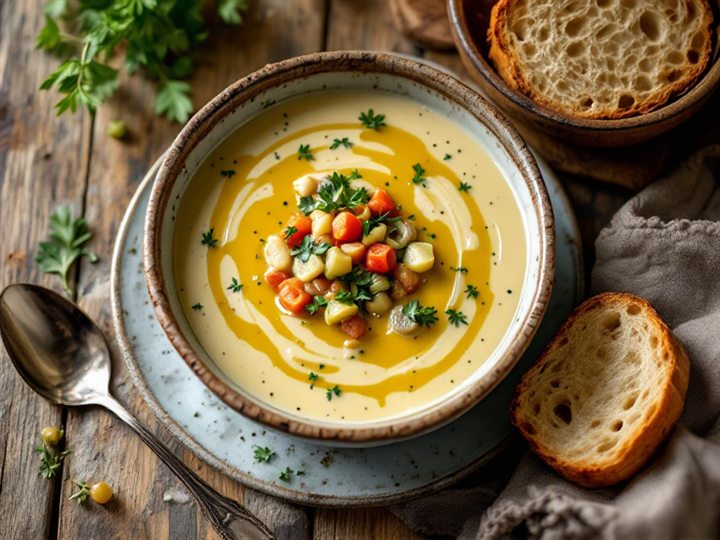
DinnerCreme de legumes with breadbatata · cenoura · cebola · natas · pão
Snack Yogurt and apple
Day 6Tosta mista — cheese and ham toast · Arroz de tomate com chouriço · Esparregado de grelos com chouriço
BreakfastTosta mista — cheese and ham toastpão de forma · queijo flamengo · fiambre · leite
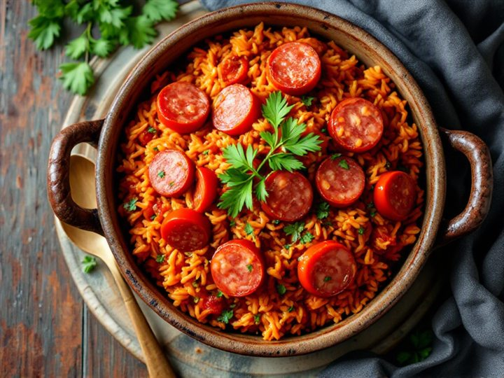
LunchArroz de tomate com chouriçoarroz carolino · tomate triturado · chouriço · cebola
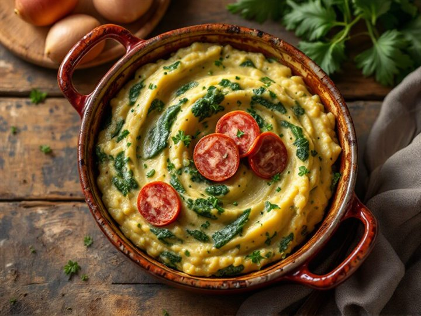
DinnerEsparregado de grelos com chouriçogrelos · chouriço · cebola · azeite · pão
Snack Biscuits and banana
Day 7Tosta de queijo com tomate · Massa com sardinha · Sopa de legumes with a cheese toast
BreakfastTosta de queijo com tomatepão de forma · queijo flamengo · tomate · leite
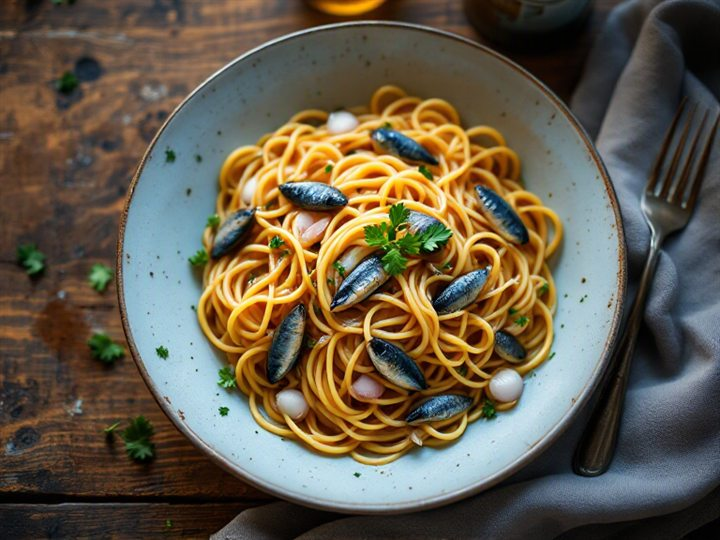
LunchMassa com sardinhamassa · sardinhas · cebola · azeiteDinnerSopa de legumes with a cheese toastbatata · cenoura · cebola · azeite · pão · queijo
Snack Yogurt and apple
Shopping list
0 / 36 bought
Sauces
Gravy (molho de carne) — not sold ready-made in Portugal. Pour the juices from the pork pan into a small pan, stir in a spoon of farinha and a splash of water, season, and simmer until it thickens. Used on the day 4 stew.
Cream sauce (natas) — nata culinária warmed with onion; finishes the risotto, the creme de legumes and the bacalhau com natas.
Béchamel — made at home: farinha whisked into warm leite with manteiga. Goes over the mash-style soups.
Cheese for the toasts — queijo flamengo melted on pão de forma: all seven breakfasts, plus the toast with the soup.
Tomato sauce — homemade from tomate triturado, onion and azeite. For the tomato soup and the tomato rice; never with the tuna.
Cooked once, used across the week
Soup pot — one big pot of sopa de legumes on day 1 covers day 1 and day 7; the bean and tomato soups are quick single batches.
Rice — arroz carolino cooked once covers the day 1 chicken rice and the day 6 tomato rice; the risotto rice is cooked fresh.
Chicken — the 2 kg roasted on day 1: half into the rice, half kept for the week's salads and snacks.
Cheese and bread — pão de forma and queijo flamengo carry all seven breakfasts and the soup toasts.
Tomato base — one batch of tomate triturado with onion and azeite serves the soup and the tomato rice.
Prices are live from the Glovo Auchan catalogue and can change; refresh before ordering.
Fresh produce and meat are sold by weight, so the final bill may differ by a few cents.
The catalogue has no plain milk, so lactose-free milk is used. A pastel de nata pack (360 g) is available for €4.69 if you want a treat.
Your ticks are saved in this browser; the shopping list prints as empty boxes, and the whole week prints without the photos.